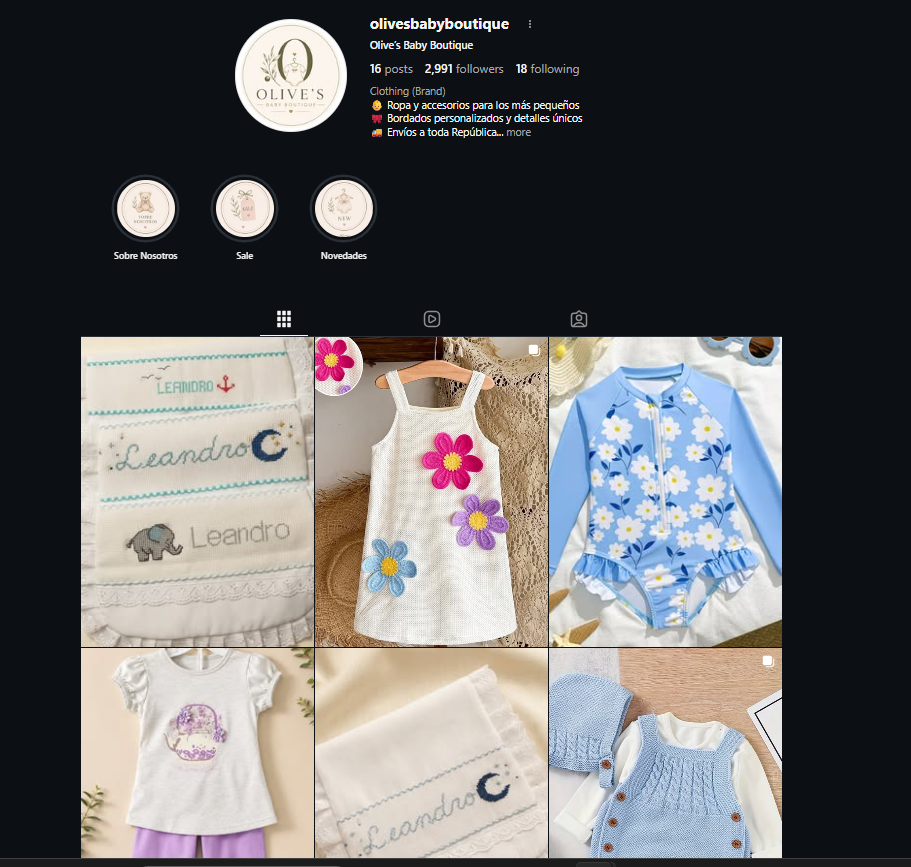
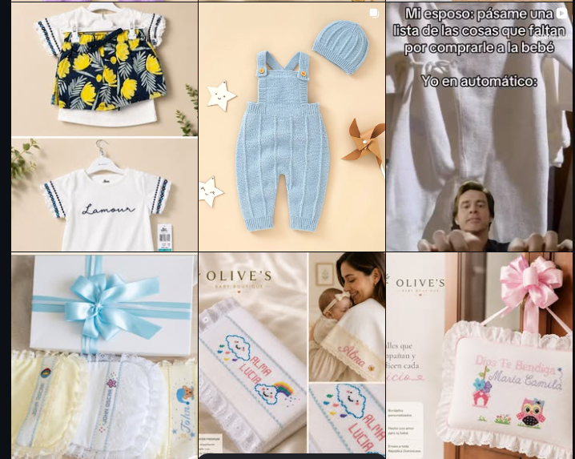

Bordados personalizados
Nombres, fechas y detalles especiales en mantas, panos, baberos y piezas seleccionadas.
Bordados y piezas personalizadas
Creamos ropa, accesorios y regalos personalizados con delicadeza, calidad y una atencion cercana para cada familia.

Quienes somos
Olive's Baby Boutique nace del amor por los pequenos detalles y la ilusion que acompana cada etapa de la infancia.
Cada pieza es cuidadosamente elegida o personalizada para convertirse en un recuerdo especial: nacimientos, bautizos, cumpleanos, baby showers y primeras etapas que merecen conservarse con ternura.
Categorias
Nombres, fechas y detalles especiales en mantas, panos, baberos y piezas seleccionadas.
Prendas dulces, comodas y delicadas para que cada pequeno luzca impecable.
Sets y detalles pensados para baby showers, nacimientos y ocasiones familiares.
Piezas para bautizos, cumpleanos, comuniones, pajama parties y celebraciones.
Nuestra promesa
Detras de cada pedido existe una historia, una ilusion y un momento irrepetible que merece ser recordado con amor.
Inspiracion real

Hazlo personal